Create and install a TLS certificate
You will need a TLS certificate installed on the server. This adds an additional layer of encryption for the whole protocol but is mainly used to protect the server API credentials (username and password) which let each user connect to the server to send/receive messages. This will make life more difficult for the average attacker that wants to interfere with your communications. This guide will setup a self-signed certificate and setup Apache to use it. Each user can manually verify the certificate's public key manually when they connect to the server the first time to ensure it is the same one that was generated on the server. The person who generated the certificate can export the certificate file and give it to the other user when they are exchanging one-time pads and have them load it up into their browser. Or simply copy the SHA1 checksum of the certificate and give that to the user at the same time in a text file. Then they can accept that certificate into the browser as trusted if the hash presented matches. Any changes to the certificate after that i.e. an actual MITM attack will throw up a warning in both user's browsers. Self-signed certificates are now more secure than using a Certificate Authority due to this scenario.
The first step is to enable the SSL module:
a2enmod ssl
Now create a new directory to store the server key and certificate:
mkdir /etc/apache2/ssl
Now create a new self-signed certificate and server key to protect it:
openssl req -x509 -nodes -days 730 -newkey rsa:4096 -keyout /etc/apache2/ssl/apache.key -out /etc/apache2/ssl/apache.crt
This will create a standard X.509 certificate with validity for 2 years
(730 days), using RSA and a key size of 4096 bits. A 4096 bit key
should be safe from low level attackers until quantum computers go mainstream. The -nodes
flag means we don't encrypt the private key. This is a convenience option which allows you to reboot
Apache or the server without needing to manually enter the private key password every time. Feel free
to remove that flag if you need more security.
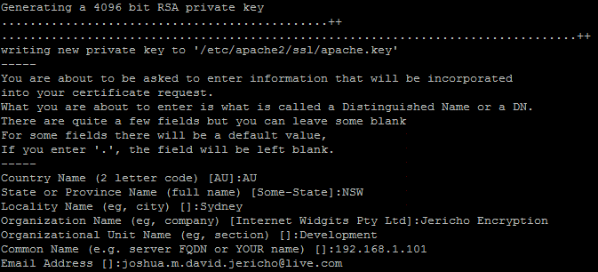
During the creation process it will ask you for some more information to fill in. Just enter some random information to protect
your anonymity. The most important line is "Common Name". Enter your site's IP address here (or domain if you have one).
Now the certificate is created. So we need to setup the virtual hosts so it works. Open up the SSL config file:
nano /etc/apache2/sites-available/default
Change the port on the virtual host to 443 which is the default SSL port.
Add the line ServerName 192.168.1.101 with your public server IP below the ServerAdmin webmaster@localhost email.
Usually you would add your domain name here if you had one:
Scroll down some more until you see the section <Directory /var/www/>. In here change the line AllowOverride None
to AllowOverride All. This allows some extra configuration using .htaccess files.
There are some .htaccess files in the program's directories to prevent access to certain directories and stop directory listings as
a security addition.
Now scroll to the end of the file and add in the following four lines to the end of your virtual host configuration (before
the closing </VirtualHost> tag):
SSLEngine on
SSLCertificateFile /etc/apache2/ssl/apache.crt
SSLCertificateKeyFile /etc/apache2/ssl/apache.key
SSLCipherSuite HIGH
The complete file should look like this:
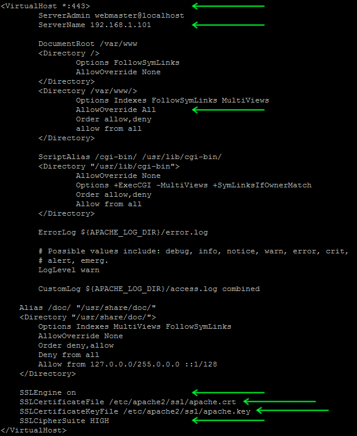
Now save and exit out of the file with Ctrl + X, then Y and Enter to confirm.
Now enable that Virtual Host with a2ensite default and restart Apache with service apache2 reload.
You may receive an extra warning on the console "NameVirtualHost *:80 has no VirtualHosts". Don't worry about this
because you have enabled only port 443 (HTTPS) to work now. Regular HTTP will have no response now.
The site should now be visible in the browser by going to the IP address of the server: https://192.168.1.101/.
Remember to swap out the 192.168.1.101 for the IP address of your server and to use https. Regular HTTP
will no longer work which is good because we only want to accept secure connections.
If you're using Firefox or Chrome and visited the server IP it will likely throw up a big warning that you're using a
self-signed certificate. Don't worry about this as we will import the certificate you just created as a trusted one in the
browser.
Setup a new secure browser profile
In this step we will setup a new secure browser or browser profile purely for secure communications. This is mainly because of
this scenario.
There's more information on that here.
It's also handy to have a separate profile so you don't accidentally erase your one-time pads whenever you clear your browser
history. It also keeps this profile and extensions separate so nothing can maliciously copy your one-time pads. An extra layer
of security would be to install the browser/browser profile into an encrypted volume,
so it's encrypted on the storage device as well.
First download the latest version of Firefox Portable from here
and install it. If you want to chat from multiple computers, install it onto a USB drive. There exists portable
versions of Chrome as well but this guide will just
cover Firefox for now.
Alternate method
If you just want to use your existing Firefox install you can follow these instructions to set up a new profile. The -no-remote option may come in handy when you want to run multiple separate Firefox profiles at the same time.
Securing your new Firefox profile
This section follows some steps to lock down your browser profile so it's as secure as possible and will only be used for chatting with this program.Disabling Certificate Authorities
Load up your new Firefox installation/profile. Click the Firefox button in the top left corner then go to
Options -> Options.
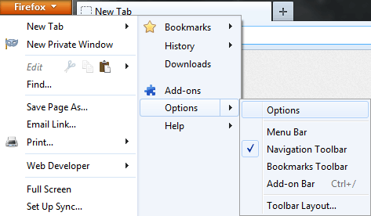
Then click the
Advanced button on the top right, then the Certificates tab. Click View Certificates.
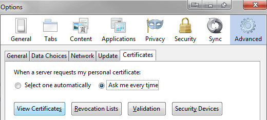
On the Servers, Authorities and Others tabs you will need to delete all of the pre-authenticated
certificates installed in your browser. Due to
this situation
you can't trust any of them and the NSA can MITM attack your connection
due to compromised Certificate Authority root certificates.
To do this, click on the Authorities tab, now click on each item and click Delete or Distrust... and click OK
on the confirmation prompt. You can select them all at once by clicking on each item, holding down the Ctrl key, then
clicking on the each item, then finally deleting all of them at once.
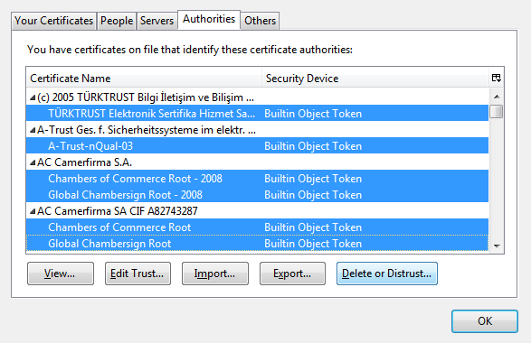
On the Servers and Others tabs, click on each item and click Delete and click OK on the confirmation
prompt.
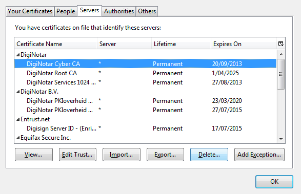
You should have a nice clean list now. When you close that dialog, the objects may reappear in the list but they will no longer
be trusted. You can verify this by going to https://google.com and it will show a warning in the browser. This is
a good thing as it means you will only trust the certificate that you created on the server not a fake certificate that
has been signed by one of the compromised Certificate Authority's root certificates which would trick your browser into
trusting the certificate on your behalf.
Remember that you will use this browser/browser profile for only your secure communications with this program. Use a regular browser
install for all other non-secure communications. There's not much you can do about other communications until the internet
community as a whole comes up with a way to secure internet communications again. The fundamental chain of trust in Certificate
Authorities is broken when governments can force a CA to handover their root certificates under secret court order.
DNSSEC will also be broken if the DNS root is in control of the United States.
There is an excellent talk on the topic here. As Bruce Schneier has said
"the US has proved to be an unethical steward of the internet".
No single country should ever be in control of the internet otherwise there is the potential for them to abuse that position of power.
Enabling TLS 1.2 in the browser
It is recommended to use the latest version of Firefox. If you have at least Firefox 27 then TLS 1.2 is supported.
Disabling default plugins in the browser
Now we will disable all the default browser plugins as they are not required and are a potential security hole.
Open the Firefox main menu then click on Add-ons

Then click on Plugins in the left side menu. For every plugin change the option to Never Activate:

Restart the browser for all the changes to take effect. That covers the basic steps to secure the browser profile. If you have
set this up on a portable Firefox install, be sure to copy that install for the other user onto a USB drive so they don't need
to repeat the process.
Exporting the self-signed certificate
Visit your server IP in your browser e.g. https://192.168.1.101. The warning for Firefox will look like something like this:
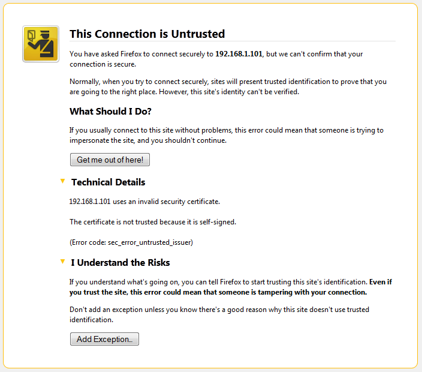
You can verify the certificate is the same one you generated on the server by typing the following commands into the command line
on your server:
openssl x509 -in /etc/apache2/ssl/apache.crt -outform DER -out cert.cer
sha1sum cert.cer
md5sum cert.cer
This will create a copy of the certificate in DER
format. Then it will output an MD5 hash and SHA1 hash of the entire certificate on the console. You will compare these values to the
"fingerprint" values of the certificate displayed by your web browser.
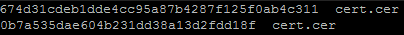
Go back to your browser window and expand the I understand the Risks section on the warning page. Click Add Exception...
which will pop up a dialog. Under the Certificate Status section, click the View... button.
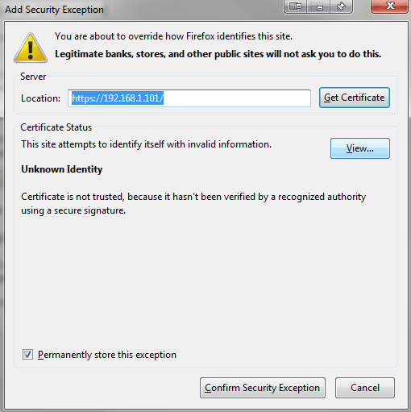
This should show the general details of the certificate that you entered earlier:
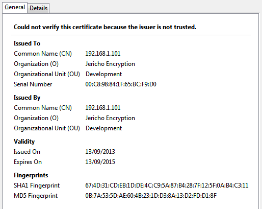
Down the bottom under Fingerprints you should see groups of hexadecimal symbols. These should match the SHA1 and MD5 hashes
of the certificate on the server. On the browser the symbols may be grouped with colons and in uppercase, this is just a method of
formatting the data, for example, 67:4D:31 is exactly the same signature as 674d31. Compare the SHA1
signature to that of the server's and also compare the MD5 hash as well.
If the values are a match, then you can export this certificate to your computer. Click the Details tab then click the
Export... button. This will pop up a Save to File dialog. Choose file type X.509 Certificate with extension .crt
which should be the default. Save it somewhere on your hard drive.
Click the Close button to close the Certificate Viewer dialog, and click Cancel on the the Security Exception
dialog. Be sure to give the other user a copy of the certificate file when you give them the one-time pads. This means they
don't need to do this manual validation.
Alternate method
You can also manually copy the certificate file from the server using the SSH connection. This is preferable if there's no match
between the hashes which would mean you are already being attacked with a
MITM attack which has replaced the public certificate with
that of the attackers.
To export the certificate from the server manually to your computer using SSH you can use
WinSCP if you are using Windows. For Linux you can use the command line for this
with SCP which will copy the certificate file off the server into your current working directory, for example:
scp username@ipaddress:/etc/apache2/ssl/apache.crt .
Notes
Be sure to give this certificate file to the other user so they can skip this manual verification step and go straight to importing the certificate into the browser. If you have created a portable Firefox installation, you can load the certificate file into that, then copy the installation directory to a USB drive and the other user will have everything they need. This is recommended if the other user is not skilled with computers. Alternatively copy down the MD5 and SHA1 certificate checksums so they can manually verify them with the certificate received by their browser.
Importing the certificate into the browser
These instructions will cover importing the self-signed certificate into the browser for Firefox and Chrome.
Firefox
For Firefox, click the Firefox button in the top left corner then go to Options -> Options.
In the Options dialog, click the Advanced button on the top right, then the Certificates tab. Click
View Certificates.
On the Authorities tab, click the Import button.
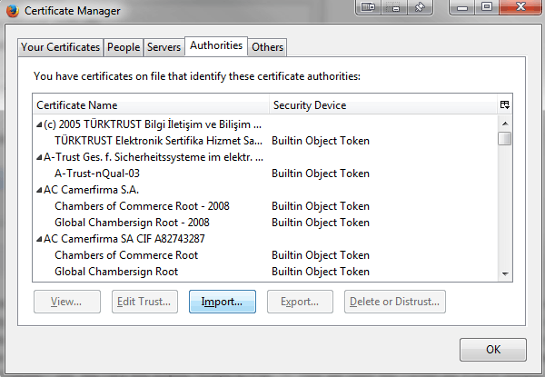
Find the certificate file and click Open.
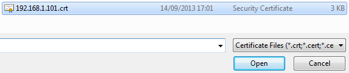
On the next dialog that pops up check the option Trust this CA to identify websites.
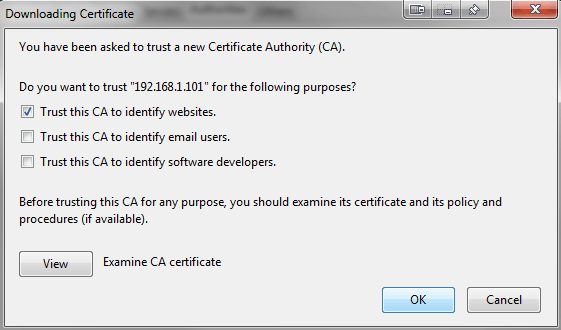
You can now close the open dialogs by clicking OK one each one. Back in your browser window, navigate to your server's IP address e.g.
https://192.168.1.101
You should now have a trusted connection to the server as shown by the padlock in the top left corner.
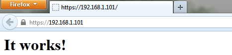
If you click on the padlock icon in the address bar, then click the More Information... button it will show you
the details for the certificate. At the bottom of the dialog it show which symmetric cipher keys are being used for the connection.
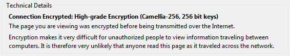
Which symmetric cipher is used and the key strength gets used decided in the Diffie-Hellman key exchange between the browser
and the server. In this example it is using the
Camellia block cipher with 256 bit keys.
Chrome
- Open Chrome settings, scroll to the bottom, and click Show advanced settings...
- Under HTTPS/SSL, click Manage certificates...
- Click the Trusted Root Certification Authorities tab, then click the Import... button. This opens the Certificate Import Wizard. Click Next to get to the File to Import screen.
- Click Browse... and select the certificate file you saved earlier, then click Next.
- Select Place all certificates in the following store. The selected store should be Trusted Root Certification Authorities. If it isn't, click Browse... and select it. Click Next and Finish.
- Click Yes on the security warning.
- Restart Chrome and visit the server IP again.
You should see a green padlock in the browser with similar certificate information to Firefox when you click the padlock icon:
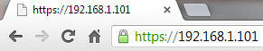
Setting up the firewall
Now we're going to configure a basic firewall so only SSH and HTTPS traffic will be allowed through to the web server.
This is a simple way to setup an iptables firewall configuration using UFW.
First set the default configuration to deny everything:
ufw default deny
Now we allow only SSH and HTTPS (TLS) traffic through:
ufw allow 22
ufw allow 443
Enable logging:
ufw logging on
Turn it on:
ufw enable
Test it and view rules:
ufw status
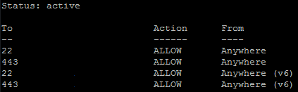
Now the firewall is enabled and logging. There are potentially other advanced configuration options you could use to harden
up the firewall and server more. You will need to do some more of your own research for that. The current configuration will
allow any IP to connect on those ports. If the IP address of you and your chat partner can change (ie dynamically assigned
from your ISP) then this is fine.
If both chat partners have static IP addresses you could restrict access to only those IPs through the
firewall. If both chat partners are in the same country you could only allow IPs from that country to connect. If both chat
partners are outside the US and in different countries you could potentially
firewall off the entire US from connecting to your
server. That would help mitigate the NSA and their Tailored Access Operations
team from finding your server easily.
Other options include changing the default SSH port to a random one. While not increasing the security it will cut down
the number of entries in the log file from basic attackers scanning for servers with the default SSH ports open. If you get log
attempts after changing the port then it would more likely indicate a targeted attack.